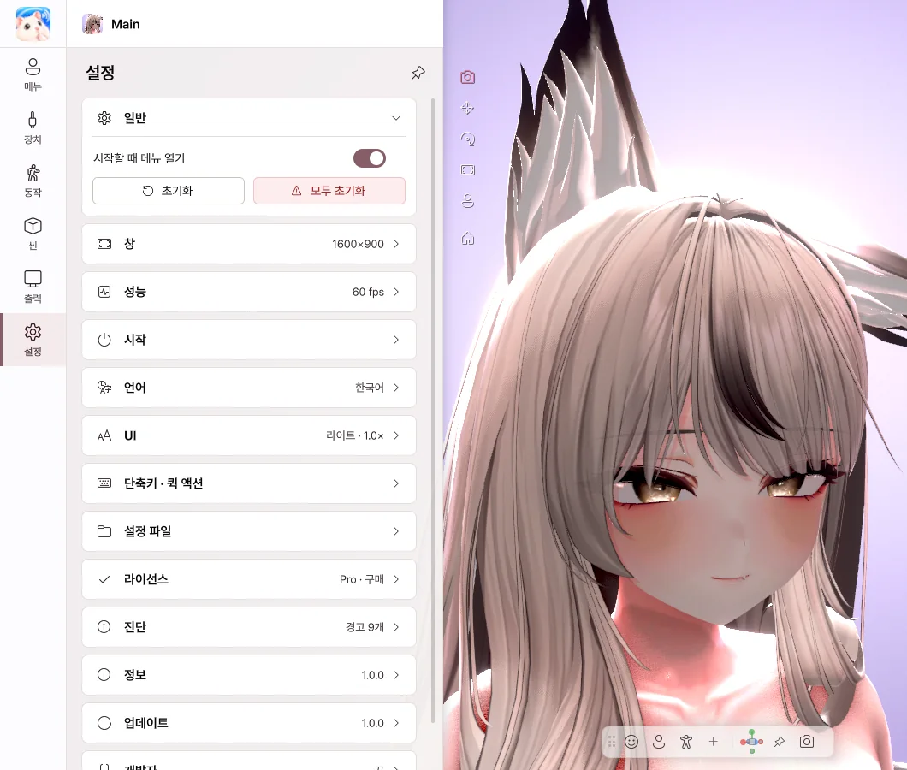

10. 설정#

설정 페이지
| 항목 |
하는 일 |
| 시작할 때 메뉴 열기 |
끄면 UI 없이 시작 |
| 초기화 |
트래킹·손·PhysBone 등을 처음 상태로 |
| 모두 초기화 |
파라미터·아바타 위치·자세·카메라까지 처음 상태로 |
| 항목 |
하는 일 |
| 해상도 |
창 크기 |
| 전체 화면 (테두리 없음) |
전체 화면 |
| 항상 위 |
다른 창 위에 두기 |
| 창 닫기 (X) |
트레이로 최소화 / 종료 |
| 항목 |
하는 일 |
| VSync / 프레임 제한 |
프레임 레이트 |
| 안티에일리어싱 / 그림자 |
화질 |
| 현재 |
지금 성능 보기 |
| 상단에 항상 표시 |
성능을 위쪽에 표시 |
| 우선순위·코어·GPU (고급) |
게임·OBS와 함께 쓸 때 CPU·GPU 배분 |
| 항목 |
하는 일 |
| 웹캠 트래킹 시작 / 마이크 시작 |
시작할 때 자동으로 켜기 |
| 시작 아바타 |
매번 묻기 / 마지막 아바타 / 기본 아바타 |
| 아바타 폴더 |
시작 화면에 보일 아바타 폴더 |
| 다시 시작 |
시작 화면으로 다시 시작 |
English · 한국어 · 日本語 · 简体中文
| 항목 |
하는 일 |
| 테마 |
라이트 / 다크 |
| 패널 위치 |
왼쪽 / 오른쪽 |
| 크기 |
UI 크기 |
| 퀵 툴바 |
툴바 불투명도, 위치 초기화 |
단축키 · 퀵 액션#
어디서나 (전역 단축키)#
게임 중이나 Avatar Live가 뒤에 있을 때도 쓰는 키입니다. 다른 프로그램의 키 입력을 막지 않습니다.
- + 단축키 추가
- 동작 고르기: 아바타 메뉴 · 제스처 · 카메라 뷰 · 저장된 뷰 · 트래킹 리셋 · 조명 프리셋 · PhysBone 리셋 · 전체 초기화
- 키 지정… 을 누르고 원하는 키 조합 누르기
- 메뉴 버튼·제스처는 누르는 동안 / 눌러서 켜고 끄기를 고를 수 있습니다.
- F1만 단독으로는 쓸 수 없습니다 (클린 뷰 전용).
퀵 액션#
전역 단축키와 같은 동작을 버튼으로 둡니다. 5장을 보세요.
설정 파일#
| 항목 |
하는 일 |
| 폴더 열기 |
설정 폴더 열기 |
| 앱 설정 초기화 |
앱 설정을 처음으로 (아바타별 설정·장치 설정은 그대로, 단축키·퀵 액션은 지워짐) |
라이선스#
현재 에디션과 라이선스 ID를 보여 줍니다.
| 버튼 |
하는 일 |
| 다른 코드 입력 |
다른 라이선스로 바꾸기 |
| 지금 확인 |
라이선스 다시 확인 |
| BOOTH에서 구매 |
Pro 구매 |
| 항목 |
하는 일 |
| 오류 리포트 보내기 |
문제 설명과 로그 보내기 (누를 때만 전송) |
| 로그 폴더 열기 |
로그 폴더 열기 |
| 로그 보기 |
오류·경고 확인 |
버전과 개발자 링크.
업데이트#
| 항목 |
하는 일 |
| 지금 확인 |
새 버전 확인 |
| 내려받기 |
새 버전 받기 |
| 다시 시작해서 설치 |
바로 설치 |
| 자동으로 확인하고 내려받기 |
새 버전을 자동으로 받아 두기 |
| 종료할 때 설치 |
끌 때 설치 |
설치에 실패하면 이전 버전으로 자동으로 돌아갑니다. 아바타와 설정은 그대로입니다.
최종 업데이트: 2026-10-09